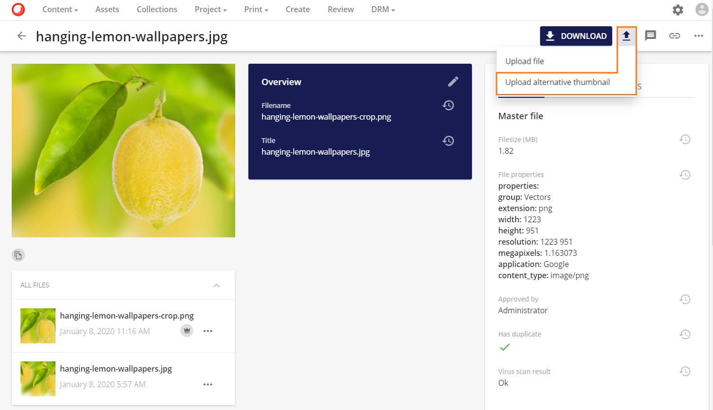
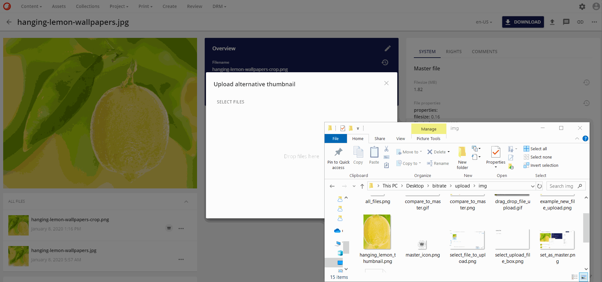
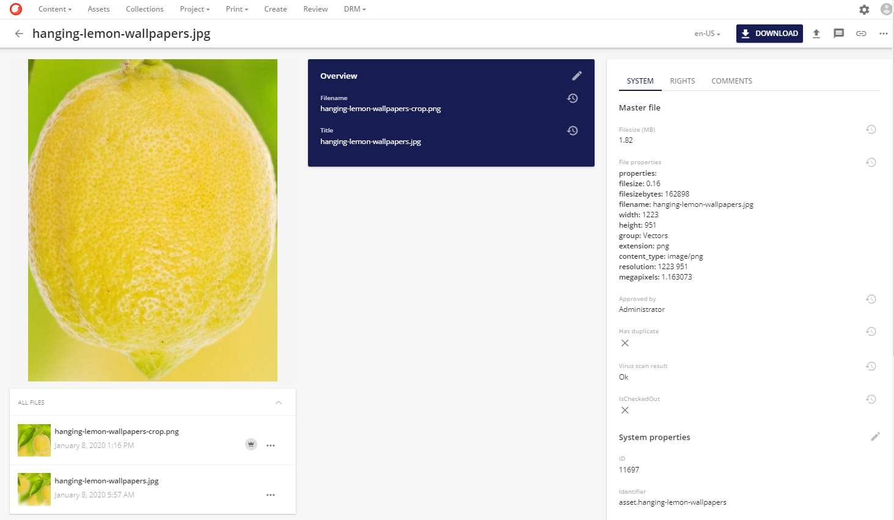
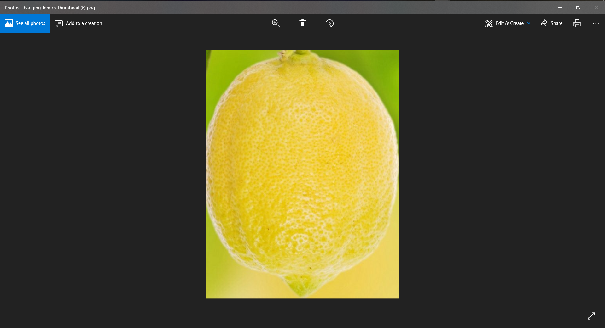
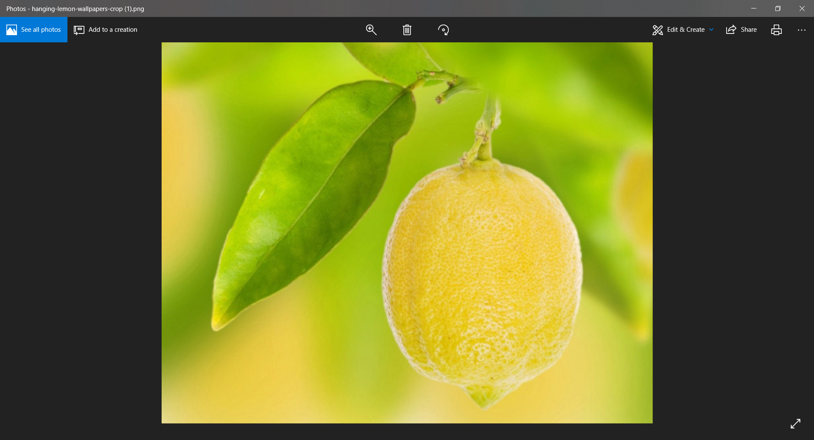

代替サムネイルのアップロード
代替サムネイルをアップロードすると、マスターファイルバージョンのサムネイルの代替バージョンをアップロードすることができます。
代替サムネイルのアップロードオプションは、アセット詳細ページの右上の操作メニューにあるアップロードアイコンボタン で選択できます。

新しいモーダルが開き、ファイルを選択するか、ファイルをドラッグ＆ドロップすることで、サムネイルとして使用する新しいファイルをアップロードすることができます。

ファイルの場所に移動し、ファイルを選択します。または、必要なファイルをモーダルにドラッグ＆ドロップします。

新しいファイルが元のサムネイルのレンダリングとプレビューのレンダリングを置き換えるまでに少しの遅延があります。
| アップロードされたファイル | サムネイル |
|---|---|
|  |
しかし、新しいプレビューはアセットの詳細ページだけでなく、アセットページにもプレビューとして表示されます。

オリジナル版はレンディションでも利用できますが、サムネイルとプレビューのレンディションは以前にアップロードした新しいサムネイルに変更されています。
| サムネイルのレンディション |
|---|
 |
| プレビューレンディション |
|---|
|  |
| オリジナルレンディション |
|---|
|  |